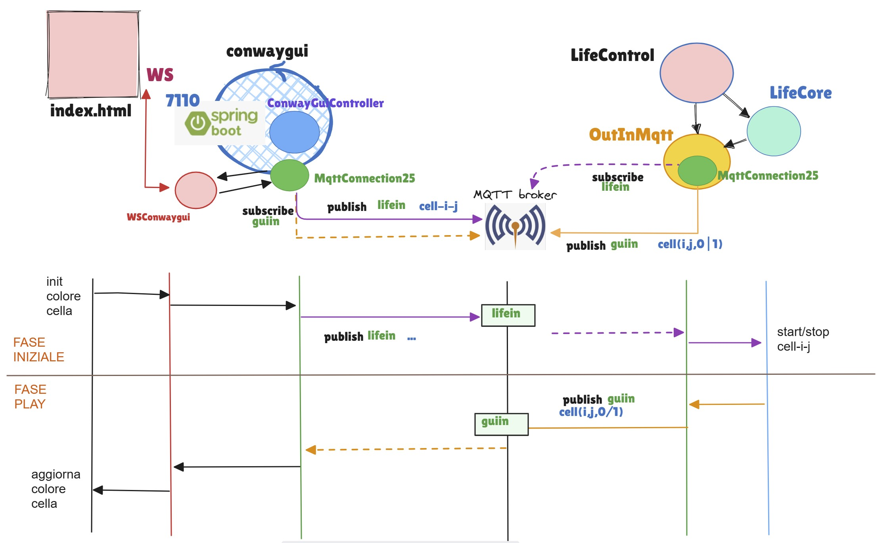
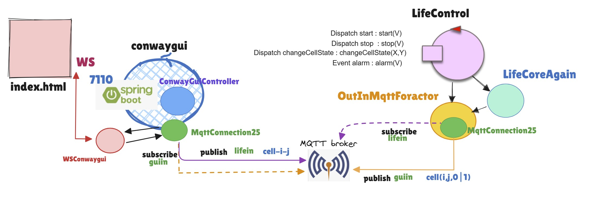

ConwayLife25¶
Requisiti ConwayLife25¶
: Progettare e costruire un sistema software che realizza il gioco della vita di Conway.
Progetto conwaygui¶
{kind=link}
Componente |
Ruolo e Tipo |
Note |
Logica del game in Java |
Ha un riferimento a OutInMqtt per fare il display delle celle. Le sue operazioni sono invocate da |
|
Controllo del game in Java |
Riceve comandi ( |
|
Dispositivo di I/O in Java |
Interagisce con le pagine HTML vie MQTT usando In alternativa potrebbe usare MqttConnectionBase ( e MqttConnCallback) |
|
Gestione in Java di informazioni da/a pagina HTML |
Estende AbstractWebSocketHandler di org.springframework.web.socket.handler.
Usa |
ConwayLife25 gui¶

|
xxx |
Progetto conwayqak¶
Il componente LifeControl è riscritto come actor-qak e il sistema è stato esteso con un componente OutInMqttForactor che trasforma i messaggi ricevuti via MQTT in dispatch per l’actor lifecontrol definito in life.qak.
{kind=link}
Componente |
Ruolo e Tipo |
Note |
Logica del game in Java. |
E’ lo stesso codice di LifeCore. Ha un riferimento a OutInMqtt per fare il display delle celle. Le sue operazioni sono invocate dall’ definito in life.qak. |
|
Logica del controllo del game in qak. |
Gestisce messaggi (dispatch) inviati da OutInMqtt. |
|
Dispositivo di I/O in Java |
Interagisce con le pagine HTML vie MQTT usando MqttConnection25. Diversamente da OutInMqtt, alla ricezione di un messaggio, invia un dispatch al suo ‘owner’ cioè all’actor lifecontrol |
Il refactoring del controllo come actor agevola la gestione di eventi e messaggi aggiuntivi che potrebbero essere generati da altri componenti.